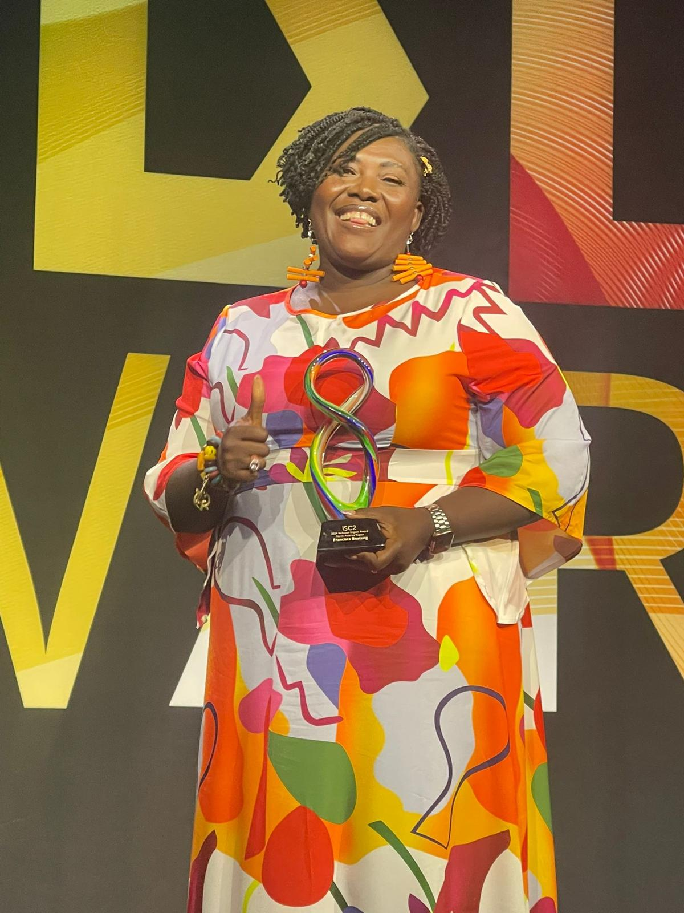

01
Governance & Operations
Building practical operating structures, accountability, decision rhythms and teams that can execute consistently.
Francisca Boateng helps organizations move from intention to execution, bringing structure to operations, clarity to leadership and people into the decisions that shape growth.
Building practical operating structures, accountability, decision rhythms and teams that can execute consistently.
Supporting leaders and organizations through growth, change, difficult decisions and the work of turning direction into action.
Keynotes and executive sessions on leadership, confidence, reinvention, governance, technology and purpose.


Her career sits at the intersection of business, technology and service. She is as comfortable shaping organizational direction as she is mentoring emerging leaders, speaking to a room or building access through community programmes.

Women in Tech Community Award.

Named among the Security Industry Association’s 2026 honorees.

Recognized for advancing inclusion and access in cybersecurity.
Distinctive pieces created with care, character and love.
Shop Odo’s Kloset